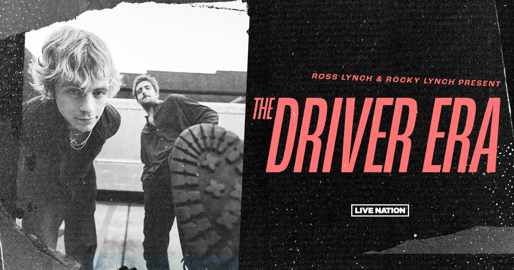

ÚLTIMO LANZAMIENTO: "GET OFF MY PHONE"
SOBRE LA BANDA
Compuesta por los hermanos Ross y Rocky Lynch, la banda surge en 2018 en Los Angeles, California, como un nuevo desafío después de la separación de R5. El grupo cuenta con 3 álbumes de estudio: X (2019), Girlfriend (2021) y Summer Mixtape (2022), un álbum en vivo: The Driver Era Live at the Greek (2023) y varios singles y remixes.
MIEMBROS
- ROSS LYNCH: Voz principal y guitarra rítmica
- ROCKY LYNCH: Voz principal, coros y guitarra principal
- RIKER LYNCH: Coros y bajo
- DAVE BRIGGS: Batería
- GARRISON JONES: Teclado y coros